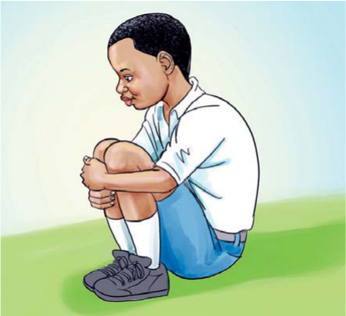

Tujinyooshe miili yetu
Jinsi ya kujinyoosha kwa kuchuchumaa
Kaa chini.
1. Kaa chini.
Kunja miguu.
2. Kunja miguu.
Nyanyuka kidogo.
3. Nyanyuka kidogo.
Shika miguu.
4. Shika miguu.

Mwanafunzi amechuchumaa, amekunja magoti na ameshika sehemu ya mbele ya miguu kwa mikono miwili.
58